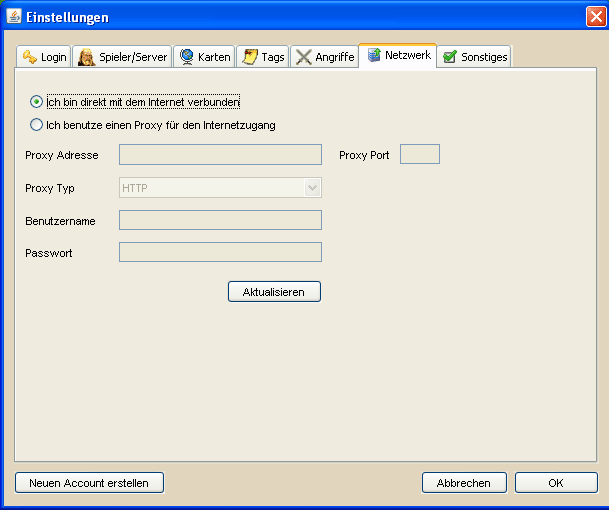

Netzwerkeinstellungen |
|
|  | |
| Die Netzwerkeinstellungen sollten für die meisten Benutzer uninteressant sein. Jeder Haushalt, der sich über einen handelsüblichen Internetprovider ins Internet einwählt, gilt als direkt mit dem Internet verbunden, unabhängig vom Netzwerkaufbau, z.B. ob ein Router verwendet wird. Die Proxyeinstellungen sind lediglich für Nutzer relevant, die über einen Proxyserver mit dem Internet verbunden sind. Dies ist im Normalfall nur in Firmennetzwerken oder in einigen Hausgemeinschaften der Fall. Die notwendigen Einträge sollten dann allerdings bekannt sein. Falls nicht kontaktiert bitte euren Netzwerkadministrator oder -verantwortlichen. Wird ein Proxy verwendet, so ist nach dem eintragen der Einstellungen unbedingt der Button Aktualisieren zu betätigen. Sind die Einstellungen einmal erfolgreich gesetzt und gespeichert worden, müssen sie bei einem Neustart von DS Workbench nicht noch einmal aktualisiert oder geändert werden. |